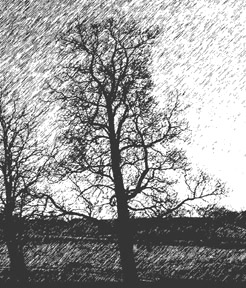

David Shaw
Comfort Tree

"This is one of my 'comfort' trees. There are two of these trees in my yard by the garden. They create a great place to hang a hammock and
just get comfortable, hence the name, comfort tree. I can't think of anything more reminiscent of comfort than laying in a hammock on a warm
summer eve and watching the sun set. I hope that you too can enjoy my 'comfort' tree. Better yet, I hope you can find one of your own."
-David Shaw-
© David Shaw
"Comfort Tree "
Computer Graphics
Common Name: Northern Catalpa
Latin Name: Catalpa speciosa
Circumference: 45 inches
Location: Chandlersville, Ohio USA
 Return to Main Page
Return to Main Page
Comments
Please send e-mail to: June Julian jj68@nyu.edu